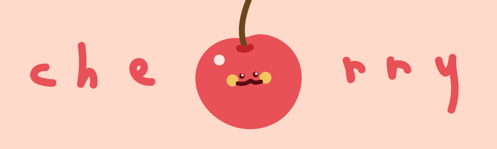
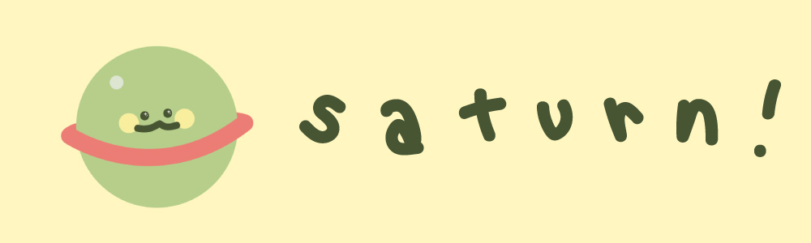
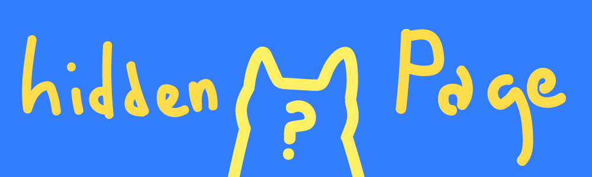

background Share
2019.07월~08월 동안 제작한 배경들. 이미지를 클릭하면 다운로드 페이지로 이동합니다.

체리콕을 먹으면서 그렸던 체리 캐릭터.
한 번 그려놓으니 귀여워서 배경색을 마구 바꿔 저장했다.
사실 저 표정은 어디에다 붙여도 귀여움 99.8% 보장한다.

행성 중에서 제일 귀엽고 특이하게 생겼다고 생각하는 토성.
어디에 붙여도 귀여운 표정을 넣으니 역시 귀엽다!
요즘 내 동년배들 다 토성배경 쓴다.

이 곳에서만 만날 수 있는 보너스 페이지!
들어가면 뒤집어질 정도로 귀여운 것이 기다리고 있으니 다들 클릭해보자.